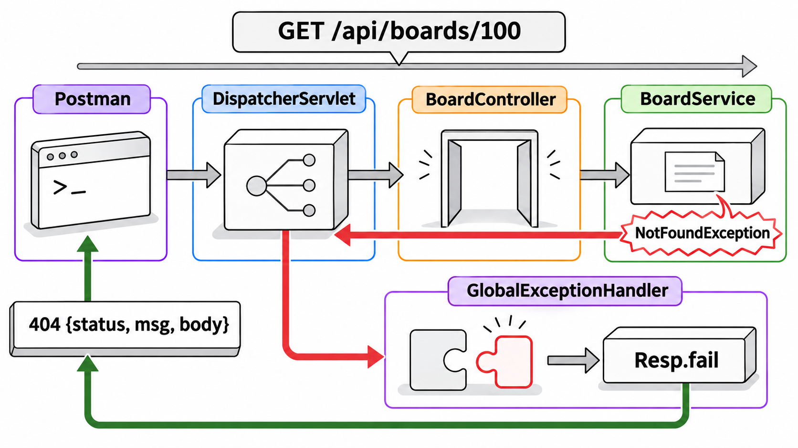
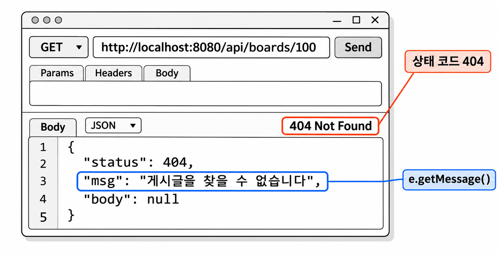
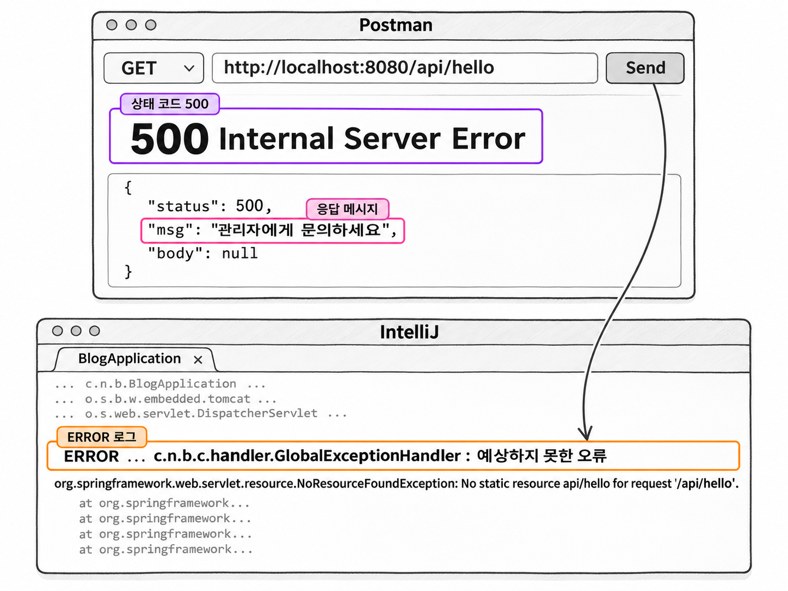
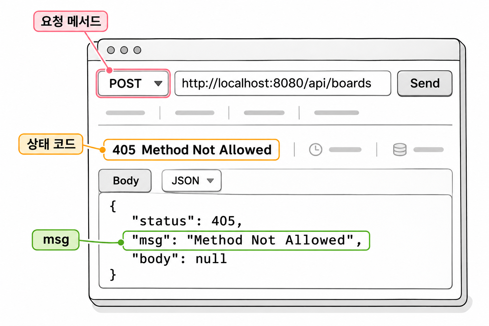

7장. 예외 처리란?
1. 글 상세 API
1.1 @PathVariable
6장에서는 글 목록 API를 만들었습니다. 이번에는 글 한 개를 보여 주는 API를 만듭니다. 3장에서 본 것처럼 REST API는 글 한 개도 자원으로 봅니다. 그래서 /api/boards/1처럼 주소 끝에 글 번호를 붙여 나타냅니다. 글 번호는 요청마다 다르므로, 주소에서 바뀌는 자리의 값을 꺼낼 방법이 필요합니다.
@PathVariable은 주소의 일부를 메서드 매개변수로 받는 애너테이션입니다. @GetMapping 주소에서 바뀌는 자리를 {이름}으로 표시합니다. 매개변수에 @PathVariable("이름")을 붙이면 요청 주소의 그 자리에 들어온 값이 매개변수에 담깁니다. 3장에서 본 경로 변수(path variable)를 코드에서 받는 방법입니다.
기본 문법
@GetMapping("/주소/{변수명}")
public ResponseEntity<?> 메서드명(@PathVariable("변수명") 타입 매개변수명) {
// 매개변수명으로 주소의 값을 사용
}주소는 문자열입니다. 그래도 매개변수 타입을 Integer로 선언하면 스프링이 "1"을 숫자 1로 바꿔 넣어 줍니다. 괄호 안의 "id"는 주소의 {id}와 짝을 맞추는 이름입니다. 매개변수 이름도 id라면 괄호 안 이름을 생략해도 됩니다. 다만 이름을 생략하면 컴파일 설정에 따라 스프링이 매개변수 이름을 알아내지 못할 수 있습니다. 그래서 이 책에서는 이름을 늘 적습니다.
1.2 Optional과 orElseThrow
글 번호로 조회하면 그 번호의 글이 없을 수도 있습니다. 이때 조회 메서드가 null을 돌려주면 받는 쪽에서 null 검사를 빠뜨리기 쉽습니다. 검사를 빠뜨린 자리에서는 NullPointerException이 납니다.
Optional은 값이 있을 수도 있고 없을 수도 있다는 사실을 타입으로 드러내는 자바 표준 클래스입니다. 리포지토리 메서드의 반환 타입을 Optional<엔티티>로 선언하면, Spring Data JPA는 조회 결과가 없을 때 null 대신 빈 Optional을 돌려줍니다. 받는 쪽은 값을 꺼내기 전에 값이 없을 때 어떻게 할지 정해야 합니다.
orElseThrow()는 Optional에 값이 있으면 꺼내 주고, 없으면 예외를 던지는 메서드입니다. 인자 없이 부르면 NoSuchElementException을 던집니다.
| 호출 | 값이 있을 때 | 값이 없을 때 |
|---|---|---|
orElseThrow() | 값을 꺼냄 | NoSuchElementException |
orElseThrow(() -> new 예외()) | 값을 꺼냄 | 람다가 만든 예외 |
글 상세 조회도 6장의 findAllJoinUser()처럼 join fetch로 작성자까지 한 번에 가져옵니다. 이 프로젝트는 open-in-view=false라서 Service의 트랜잭션이 끝나면 지연 로딩을 할 수 없기 때문입니다. JPQL 안의 :id는 이름 있는 파라미터(named parameter)입니다. 메서드 매개변수에 @Param("id")를 붙여 값을 연결합니다.
응답용으로는 6장의 ListDTO와 별도로 상세용 DetailDTO를 만듭니다. 상세 화면에는 목록과 다른 정보가 필요하기 때문입니다.
예제 7-1 — 글 상세 API 만들기
이어서: 예제 6-5
파일명: src/main/java/com/newtenco/blog/board/BoardRepository.java
package com.newtenco.blog.board;
import org.springframework.data.jpa.repository.JpaRepository;
import org.springframework.data.jpa.repository.Query;
import org.springframework.data.repository.query.Param;
import java.util.List;
import java.util.Optional;
public interface BoardRepository extends JpaRepository<Board, Integer> {
@Query("select b from Board b join fetch b.user order by b.id desc")
List<Board> findAllJoinUser();
@Query("select b from Board b join fetch b.user where b.id = :id")
Optional<Board> findByIdJoinUser(@Param("id") Integer id);
}파일명: src/main/java/com/newtenco/blog/board/BoardResponse.java
package com.newtenco.blog.board;
import java.sql.Timestamp;
public class BoardResponse {
public record ListDTO(Integer id, String title, String content, String username, Timestamp createdAt) {
public ListDTO(Board board) {
this(board.getId(), board.getTitle(), board.getContent(), board.getUser().getUsername(), board.getCreatedAt());
}
}
public record DetailDTO(Integer id, String title, String content, Integer userId, String username) {
public DetailDTO(Board board) {
this(board.getId(), board.getTitle(), board.getContent(), board.getUser().getId(), board.getUser().getUsername());
}
}
}파일명: src/main/java/com/newtenco/blog/board/BoardService.java
package com.newtenco.blog.board;
import lombok.RequiredArgsConstructor;
import org.springframework.stereotype.Service;
import org.springframework.transaction.annotation.Transactional;
import java.util.List;
@RequiredArgsConstructor
@Transactional(readOnly = true)
@Service
public class BoardService {
private final BoardRepository boardRepository;
public List<BoardResponse.ListDTO> 글목록() {
return boardRepository.findAllJoinUser().stream()
.map(BoardResponse.ListDTO::new)
.toList();
}
public BoardResponse.DetailDTO 글상세(Integer id) {
Board board = boardRepository.findByIdJoinUser(id).orElseThrow();
return new BoardResponse.DetailDTO(board);
}
}파일명: src/main/java/com/newtenco/blog/board/BoardController.java
package com.newtenco.blog.board;
import com.newtenco.blog.core.util.Resp;
import lombok.RequiredArgsConstructor;
import org.springframework.http.ResponseEntity;
import org.springframework.web.bind.annotation.GetMapping;
import org.springframework.web.bind.annotation.PathVariable;
import org.springframework.web.bind.annotation.RestController;
@RequiredArgsConstructor
@RestController
public class BoardController {
private final BoardService boardService;
@GetMapping("/api/boards")
public ResponseEntity<?> list() {
return Resp.ok(boardService.글목록());
}
@GetMapping("/api/boards/{id}")
public ResponseEntity<?> detail(@PathVariable("id") Integer id) {
return Resp.ok(boardService.글상세(id));
}
}실행 결과
서버를 실행하고 Postman에서 GET http://localhost:8080/api/boards/1을 보내면 상태 코드 200과 함께 다음 본문을 받습니다.
{
"status": 200,
"msg": "성공",
"body": {
"id": 1,
"title": "제목1",
"content": "내용1",
"userId": 1,
"username": "ssar"
}
}이번에는 없는 글 번호로 GET http://localhost:8080/api/boards/100을 보냅니다. 상태 코드 500과 함께 스프링 부트의 기본 오류 응답이 옵니다. timestamp 값은 실행 시각에 따라 다르고, trace는 매우 길어서 줄여 보였습니다.
{
"timestamp": "2026-11-20T10:15:30.123Z",
"status": 500,
"error": "Internal Server Error",
"trace": "java.util.NoSuchElementException: No value present\r\n\tat java.base/java.util.Optional.orElseThrow(Optional.java:377)\r\n\tat ... (이하 생략)",
"message": "No value present",
"path": "/api/boards/100"
}서버 콘솔에는 다음 예외가 찍힙니다.
java.util.NoSuchElementException: No value presenttrace와 message는 devtools가 개발 중에만 넣어 주는 값입니다. devtools가 빠진 배포용 jar에서는 timestamp · status · error · path만 나갑니다. 스택 트레이스에는 클래스 이름과 코드 위치 같은 서버 내부 정보가 그대로 드러납니다. 그래서 실제 서비스 응답에 나가면 안 됩니다. 이 점은 4.1에서 500 응답의 msg를 정할 때 다시 봅니다.
Postman에서 GET http://localhost:8080/api/boards/100을 보낸 화면
아직 그림이 없습니다
DetailDTO에는 목록에 없던 userId가 들어 있습니다. 화면에서 글쓴이를 구분할 때 쓰고, 나중에 요청한 사람이 작성자인지 확인할 때도 씁니다.
글 1번은 기대한 대로 응답했습니다. 문제는 글 100번입니다. 클라이언트가 없는 자원을 찾았으므로 404 Not Found가 맞습니다. 그런데 서버 고장을 뜻하는 500이 왔습니다. 응답 모양도 Resp가 아니라 스프링 부트 기본 형식입니다. 이 장의 나머지 절에서 이 두 문제를 고칩니다.
2. 사용자 정의 예외
2.1 RuntimeException 상속하기
NoSuchElementException은 값이 없다는 사실만 알려 줍니다. 이 예외만 보고는 어떤 자원이 없는지, 클라이언트에게 몇 번 상태 코드를 줘야 하는지 알 수 없습니다. 상황에 맞는 이름의 예외를 직접 만들면 예외 이름만 보고 응답 상태 코드를 정할 수 있습니다. 이렇게 개발자가 직접 만든 예외를 사용자 정의 예외(custom exception)라고 합니다.
이 책의 사용자 정의 예외는 모두 RuntimeException을 상속합니다. 이유는 두 가지입니다.
첫째, RuntimeException의 자식은 언체크 예외(unchecked exception)라서 메서드마다 throws를 적지 않아도 됩니다. Service에서 던진 예외는 Controller를 거쳐 스프링까지 그대로 올라갑니다. 중간 계층에서 예외를 받아 다시 넘기는 코드가 필요 없습니다.
둘째, @Transactional은 기본 설정에서 RuntimeException이 나면 트랜잭션을 롤백(rollback)합니다. 롤백은 그 트랜잭션에서 바꾼 데이터를 되돌리는 일입니다. 그래서 글 수정 중에 예외가 나도 반쯤 바뀐 데이터가 남지 않습니다.
예제 7-2 — 없는 글 예외 던지기
이어서: 예제 7-1
파일명: src/main/java/com/newtenco/blog/core/handler/errors/NotFoundException.java
package com.newtenco.blog.core.handler.errors;
public class NotFoundException extends RuntimeException {
public NotFoundException(String message) {
super(message);
}
}파일명: src/main/java/com/newtenco/blog/board/BoardService.java
package com.newtenco.blog.board;
import com.newtenco.blog.core.handler.errors.NotFoundException;
import lombok.RequiredArgsConstructor;
import org.springframework.stereotype.Service;
import org.springframework.transaction.annotation.Transactional;
import java.util.List;
@RequiredArgsConstructor
@Transactional(readOnly = true)
@Service
public class BoardService {
private final BoardRepository boardRepository;
public List<BoardResponse.ListDTO> 글목록() {
return boardRepository.findAllJoinUser().stream()
.map(BoardResponse.ListDTO::new)
.toList();
}
public BoardResponse.DetailDTO 글상세(Integer id) {
Board board = boardRepository.findByIdJoinUser(id)
.orElseThrow(() -> new NotFoundException("게시글을 찾을 수 없습니다"));
return new BoardResponse.DetailDTO(board);
}
}실행 결과
GET http://localhost:8080/api/boards/100을 다시 보내도 상태 코드는 여전히 500이고 응답도 스프링 부트의 기본 오류 형식입니다. 바뀌는 것은 예외의 종류와 메시지입니다. 본문의 message가 "게시글을 찾을 수 없습니다"로 바뀌고, 서버 콘솔에는 다음 예외가 찍힙니다.
com.newtenco.blog.core.handler.errors.NotFoundException: 게시글을 찾을 수 없습니다super(message)로 넘긴 문장은 RuntimeException에 저장되고, 나중에 getMessage()로 꺼낼 수 있습니다. 이제 예외 이름이 "글이 없다"는 뜻을 담습니다. 응답이 그대로인 까닭은 이 예외를 받아 404로 바꾸는 코드가 아직 없기 때문입니다. 직접 만든 예외처럼 응답할 상태 코드가 정해지지 않은 예외를 처리하지 않으면, 스프링은 500으로 응답합니다.
NotFoundException은 게시글에만 쓰는 예외가 아닙니다. 댓글이나 회원이 없을 때도 메시지만 바꿔 다시 씁니다. 그래서 board 패키지가 아닌 공통 패키지 core.handler.errors에 둡니다.
2.2 실패 응답 Resp.fail
성공 응답은 6장에서 만든 Resp.ok()로 status · msg · body 모양을 맞췄습니다. 실패 응답도 같은 모양이어야 클라이언트가 모든 응답을 한 가지 방식으로 읽습니다. 클라이언트는 HTTP 상태 코드(본문의 status도 같은 값)로 성공과 실패를 가리고, msg를 화면에 그대로 띄우면 됩니다.
Resp.fail()은 HTTP 상태와 메시지를 받아 실패 응답을 만드는 정적 메서드입니다. 실패 응답에는 돌려줄 데이터가 없으므로 body는 null입니다. 제네릭 타입도 "값 없음"을 뜻하는 Void로 둡니다.
예제 7-3 — 실패 응답 메서드 만들기
이어서: 예제 7-2
파일명: src/main/java/com/newtenco/blog/core/util/Resp.java
package com.newtenco.blog.core.util;
import org.springframework.http.HttpStatus;
import org.springframework.http.ResponseEntity;
public record Resp<T>(Integer status, String msg, T body) {
public static <B> ResponseEntity<Resp<B>> ok(B body) {
return ResponseEntity.ok(new Resp<>(200, "성공", body));
}
public static ResponseEntity<Resp<Void>> fail(HttpStatus status, String msg) {
return ResponseEntity.status(status).body(new Resp<>(status.value(), msg, null));
}
}HttpStatus는 HTTP 상태 코드를 모아 둔 스프링의 열거형(enum)입니다. ResponseEntity.status(status)는 실제 HTTP 응답의 상태 코드를 정합니다. status.value()는 같은 상태 코드를 숫자로 꺼내 본문의 status에 넣습니다. 두 값을 같은 status에서 가져오므로 상태 라인의 상태 코드와 본문의 status는 늘 같습니다.
아직 fail()을 부르는 코드가 없어서 실행 결과는 예제 7-2와 같습니다. 예외를 받아 이 메서드를 부르는 코드는 다음 절에서 만듭니다.
3. 전역 예외 처리
3.1 @RestControllerAdvice와 @ExceptionHandler
예외를 응답으로 바꾸는 코드를 Controller 메서드마다 try-catch로 쓰면, 같은 코드가 API 수만큼 늘어납니다. 이 코드를 한 클래스에 모아 모든 Controller의 예외를 한곳에서 처리하는 방식을 전역 예외 처리라고 합니다.
@RestControllerAdvice는 붙인 클래스가 모든 Controller에 공통으로 적용된다고 표시하는 애너테이션입니다. @RestController처럼 메서드의 반환값을 JSON 응답 본문으로 씁니다. @ExceptionHandler는 메서드 위에 붙입니다. 괄호 안 타입의 예외가 Controller 밖으로 나오면 스프링이 그 메서드를 대신 실행합니다.
기본 문법
@RestControllerAdvice
public class 클래스명 {
@ExceptionHandler(예외클래스.class)
public ResponseEntity<?> 메서드명(예외클래스 e) {
return 응답;
}
}
DispatcherServlet은 스프링 MVC의 중심 객체로, 클라이언트의 요청을 받아 알맞은 Controller에 넘깁니다. 그림 7-1처럼 Service에서 던진 예외는 Controller를 지나 DispatcherServlet까지 올라갑니다. 예외를 받은 DispatcherServlet은 @RestControllerAdvice 클래스에서 예외 타입이 맞는 @ExceptionHandler 메서드를 찾아 실행합니다. 이 메서드가 돌려준 ResponseEntity는 Controller가 돌려준 응답처럼 클라이언트에게 갑니다. 그래서 Controller와 Service는 예외를 던지기만 하고, 실패 응답을 만드는 코드는 두지 않습니다.
3.2 404 응답 확인
NotFoundException을 받아 404 응답으로 바꾸는 처리 클래스를 만듭니다.
예제 7-4 — 없는 글을 404로 응답하기
이어서: 예제 7-3
파일명: src/main/java/com/newtenco/blog/core/handler/GlobalExceptionHandler.java
package com.newtenco.blog.core.handler;
import com.newtenco.blog.core.handler.errors.NotFoundException;
import com.newtenco.blog.core.util.Resp;
import org.springframework.http.HttpStatus;
import org.springframework.http.ResponseEntity;
import org.springframework.web.bind.annotation.ExceptionHandler;
import org.springframework.web.bind.annotation.RestControllerAdvice;
@RestControllerAdvice
public class GlobalExceptionHandler {
@ExceptionHandler(NotFoundException.class)
public ResponseEntity<?> ex404(NotFoundException e) {
return Resp.fail(HttpStatus.NOT_FOUND, e.getMessage());
}
}실행 결과
GET http://localhost:8080/api/boards/100을 보내면 상태 코드 404와 함께 다음 본문을 받습니다.
{
"status": 404,
"msg": "게시글을 찾을 수 없습니다",
"body": null
}GET http://localhost:8080/api/boards/1은 예외가 나지 않으므로 예제 7-1과 같은 200 응답을 받습니다.

생성형 예시 · 실제 실행 안 함
msg에는 Service에서 예외를 만들 때 넘긴 문장이 e.getMessage()로 그대로 들어갑니다. 메시지를 바꾸고 싶으면 예외를 던지는 자리만 고치면 됩니다. 이제 실패 응답도 성공 응답과 같은 status · msg · body 모양입니다.
GlobalExceptionHandler는 따로 등록하지 않았습니다. @RestControllerAdvice에는 @Component가 들어 있고, 이 클래스는 @SpringBootApplication이 있는 패키지 아래에 있습니다. 그래서 2장에서 본 컴포넌트 스캔이 이 클래스를 찾아 빈으로 만듭니다.
4. 처리하지 못한 오류
4.1 500 응답과 로그(@Slf4j)
서버에서는 NotFoundException처럼 예상한 예외 말고도 코드 실수나 DB 오류처럼 예상하지 못한 예외가 납니다. 이런 예외는 처리할 메서드가 없어서 응답이 다시 스프링 부트 기본 형식으로 나갑니다. 마지막 안전망으로 Exception을 받는 처리 메서드를 하나 둡니다. 이 메서드가 남은 예외를 모두 Resp 모양의 500 응답으로 바꿉니다.
처리 메서드가 여럿이면 스프링은 던져진 예외와 가장 가까운 타입의 메서드를 고릅니다. NotFoundException은 Exception의 자식이기도 합니다. 하지만 ex404()가 더 정확히 맞으므로 NotFoundException은 계속 ex404()가 처리합니다. Exception 처리 메서드는 맞는 메서드가 따로 없는 예외만 받습니다.
500 응답의 msg에는 예외 메시지 대신 "관리자에게 문의하세요"만 씁니다. 예외 메시지에는 SQL이나 클래스 이름 같은 서버 내부 정보가 담길 수 있어서 클라이언트에게 보여 주면 안 됩니다. 대신 개발자가 원인을 찾을 수 있도록 서버에 로그(log)를 남깁니다. 로그는 프로그램이 실행 중에 남기는 기록입니다.
Lombok의 @Slf4j를 클래스에 붙이면 log라는 로거(logger) 필드가 자동으로 생깁니다. 로거는 로그를 출력하는 객체입니다. SLF4J는 자바의 여러 로그 라이브러리를 같은 방법으로 쓰게 해 주는 라이브러리로, 스프링 부트에 이미 들어 있습니다. log.error("메시지", e)처럼 마지막 인자로 예외를 넘기면 메시지 뒤에 예외의 스택 트레이스(stack trace)까지 출력됩니다. 스택 트레이스는 예외가 난 코드 위치를 호출 순서대로 보여 주는 기록입니다.
예제 7-5 — 예상하지 못한 오류를 500으로 응답하기
이어서: 예제 7-4
파일명: src/main/java/com/newtenco/blog/core/handler/GlobalExceptionHandler.java
package com.newtenco.blog.core.handler;
import com.newtenco.blog.core.handler.errors.NotFoundException;
import com.newtenco.blog.core.util.Resp;
import lombok.extern.slf4j.Slf4j;
import org.springframework.http.HttpStatus;
import org.springframework.http.ResponseEntity;
import org.springframework.web.bind.annotation.ExceptionHandler;
import org.springframework.web.bind.annotation.RestControllerAdvice;
@Slf4j
@RestControllerAdvice
public class GlobalExceptionHandler {
@ExceptionHandler(NotFoundException.class)
public ResponseEntity<?> ex404(NotFoundException e) {
return Resp.fail(HttpStatus.NOT_FOUND, e.getMessage());
}
@ExceptionHandler(Exception.class)
public ResponseEntity<?> exUnknown(Exception e) {
log.error("예상하지 못한 오류", e);
return Resp.fail(HttpStatus.INTERNAL_SERVER_ERROR, "관리자에게 문의하세요");
}
}실행 결과
만들지 않은 주소 GET http://localhost:8080/api/hello를 보내면 상태 코드 500과 함께 다음 본문을 받습니다.
{
"status": 500,
"msg": "관리자에게 문의하세요",
"body": null
}서버 콘솔에는 다음과 비슷한 로그가 스택 트레이스와 함께 찍힙니다. 로그 앞부분의 시각과 스레드 이름은 실행할 때마다 다릅니다.
ERROR ... c.n.b.c.handler.GlobalExceptionHandler : 예상하지 못한 오류
org.springframework.web.servlet.resource.NoResourceFoundException: No static resource api/hello for request '/api/hello'.GET http://localhost:8080/api/boards/100은 계속 ex404()가 받아 404로 응답합니다.

생성형 예시 · 실제 실행 안 함
응답 모양은 맞췄지만 상태 코드가 이상합니다. 없는 주소를 요청한 것은 클라이언트의 실수이므로 404가 맞습니다. 실제로 예제 7-5 전에는 스프링이 이 요청에 404로 응답했습니다. 그런데 새로 넣은 Exception 처리 메서드가 스프링이 404로 처리하던 NoResourceFoundException까지 받아 500으로 바꿔 버렸습니다. 서버가 고장 난 것도 아닌데 오류 로그가 쌓이는 것도 문제입니다.
4.2 ErrorResponse로 원래 상태 코드 지키기
스프링 MVC는 요청을 처리하다 문제가 생기면 스프링이 정의한 예외를 던집니다. 이 예외마다 알맞은 상태 코드가 정해져 있습니다. 없는 주소를 요청하면 NoResourceFoundException(404)이 납니다. 주소는 있지만 지원하지 않는 HTTP 메서드로 요청하면 HttpRequestMethodNotSupportedException(405)이 납니다.
이런 예외들은 ErrorResponse 인터페이스를 구현합니다. ErrorResponse는 "이 예외는 응답할 상태 코드를 알고 있다"는 표시입니다. getStatusCode()로 그 상태 코드를 꺼낼 수 있습니다.
그래서 Exception 처리 메서드 안에서 예외가 ErrorResponse인지 먼저 확인합니다. 맞으면 예외가 알려 주는 상태 코드로 응답하고, 아니면 지금처럼 로그를 남기고 500으로 응답합니다. instanceof ErrorResponse er는 Java 16부터 쓸 수 있는 패턴 매칭으로, 타입 확인과 형변환을 한 번에 합니다.
예제 7-6 — 스프링 예외의 상태 코드 지키기
이어서: 예제 7-5
파일명: src/main/java/com/newtenco/blog/core/handler/GlobalExceptionHandler.java
package com.newtenco.blog.core.handler;
import com.newtenco.blog.core.handler.errors.NotFoundException;
import com.newtenco.blog.core.util.Resp;
import lombok.extern.slf4j.Slf4j;
import org.springframework.http.HttpStatus;
import org.springframework.http.ResponseEntity;
import org.springframework.web.ErrorResponse;
import org.springframework.web.bind.annotation.ExceptionHandler;
import org.springframework.web.bind.annotation.RestControllerAdvice;
@Slf4j
@RestControllerAdvice
public class GlobalExceptionHandler {
@ExceptionHandler(NotFoundException.class)
public ResponseEntity<?> ex404(NotFoundException e) {
return Resp.fail(HttpStatus.NOT_FOUND, e.getMessage());
}
@ExceptionHandler(Exception.class)
public ResponseEntity<?> exUnknown(Exception e) {
if (e instanceof ErrorResponse er) {
HttpStatus status = HttpStatus.valueOf(er.getStatusCode().value());
return Resp.fail(status, status.getReasonPhrase());
}
log.error("예상하지 못한 오류", e);
return Resp.fail(HttpStatus.INTERNAL_SERVER_ERROR, "관리자에게 문의하세요");
}
}실행 결과
GET http://localhost:8080/api/hello를 보내면 상태 코드 404와 함께 다음 본문을 받습니다. 서버 콘솔에는 오류 로그가 찍히지 않습니다.
{
"status": 404,
"msg": "Not Found",
"body": null
}글 목록 주소에 메서드만 바꿔 POST http://localhost:8080/api/boards를 보내면 상태 코드 405와 함께 다음 본문을 받습니다.
{
"status": 405,
"msg": "Method Not Allowed",
"body": null
}
생성형 예시 · 실제 실행 안 함
getStatusCode()는 HttpStatusCode 타입을 돌려주므로 Resp.fail()에 바로 넘길 수 없습니다. 그래서 value()로 숫자를 꺼낸 뒤 HttpStatus.valueOf()로 HttpStatus로 바꿉니다. getReasonPhrase()는 상태 코드의 표준 이름(Not Found, Method Not Allowed)을 돌려주고, 이 문장이 msg에 들어갑니다.
이제 예외는 세 갈래로 처리됩니다.
| 예외 | 처리 메서드 | 응답 | 오류 로그 |
|---|---|---|---|
직접 만든 NotFoundException | ex404() | 404, 예외 메시지 | 남기지 않음 |
스프링이 상태 코드를 아는 예외(ErrorResponse) | exUnknown() | 원래 상태 코드, 표준 이름 | 남기지 않음 |
| 그 밖의 예외 | exUnknown() | 500, "관리자에게 문의하세요" | 남김 |
그 밖의 예외만 서버 고장으로 보고 로그를 남기므로, 오류 로그에는 실제로 고쳐야 할 예외만 쌓입니다.
다른 선택지: ProblemDetail
스프링에는 오류 응답 본문을 나타내는 ProblemDetail 클래스가 이미 있습니다. 오류 응답 형식의 표준인 RFC 9457을 따르며, type · title · status · detail · instance 같은 키로 본문을 만듭니다. 이 책이 ProblemDetail 대신 Resp를 직접 만든 이유는 성공 응답과 실패 응답을 같은 모양으로 맞추기 위해서입니다. ProblemDetail은 오류 응답에만 쓰는 형식이라서 성공 응답의 모양은 따로 정해야 합니다. 실무에서 ProblemDetail을 쓰는 프로젝트를 만나면, Resp.fail()이 하던 일을 표준 형식으로 바꾼 것으로 보면 됩니다.